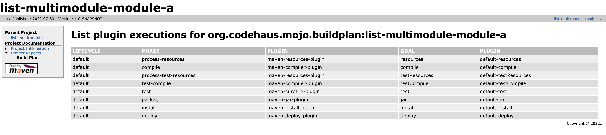

Usage
List plugin executions within a project
> mvn buildplan:list
[INFO] --- buildplan-maven-plugin:0.1-SNAPSHOT:list (default-cli) @ buildplan-maven-plugin ---
[INFO] --------------------------------------------------------------------------------------------------------------------
[INFO] PLUGIN | PHASE | ID | GOAL
[INFO] --------------------------------------------------------------------------------------------------------------------
[INFO] maven-plugin-plugin | generate-sources | help-goal | helpmojo
[INFO] maven-plugin-plugin | process-classes | default-descriptor | descriptor
[INFO] maven-resources-plugin | process-resources | default-resources | resources
[INFO] maven-compiler-plugin | compile | default-compile | compile
[INFO] maven-plugin-plugin | process-classes | mojo-descriptor | descriptor
[INFO] maven-resources-plugin | process-test-resources | default-testResources | testResources
[INFO] maven-compiler-plugin | test-compile | default-testCompile | testCompile
[INFO] maven-surefire-plugin | test | default-test | test
[INFO] animal-sniffer-maven-plugin | process-classes | check-signature | check
[INFO] maven-jar-plugin | package | default-jar | jar
[INFO] maven-plugin-plugin | package | default-addPluginArtifactMetadata | addPluginArtifactMetadata
[INFO] maven-source-plugin | package | attach-sources | jar-no-fork
[INFO] license-maven-plugin | verify | default | check
[INFO] maven-install-plugin | install | default-install | install
[INFO] maven-deploy-plugin | deploy | default-deploy | deploy
It is possible to define the tasks used to calculate execution plan:
mvn buildplan:list-phase -Dbuildplan.tasks=clean,test
If you want to show the lifecycle that defines the listed phase(s), add this parameter:
mvn buildplan:list-phase -Dbuildplan.showLifecycles
List plugin executions within phases
> mvn buildplan:list-phase
[INFO] --- buildplan-maven-plugin:0.1-SNAPSHOT:list-phase (default-cli) @ buildplan-maven-plugin ---
[INFO] install ------------------------------------------------------------------------------------------
[INFO] + maven-install-plugin | default-install | install
[INFO] generate-sources ---------------------------------------------------------------------------------
[INFO] + maven-plugin-plugin | help-goal | helpmojo
[INFO] process-resources --------------------------------------------------------------------------------
[INFO] + maven-resources-plugin | default-resources | resources
[INFO] test ---------------------------------------------------------------------------------------------
[INFO] + maven-surefire-plugin | default-test | test
[INFO] test-compile -------------------------------------------------------------------------------------
[INFO] + maven-compiler-plugin | default-testCompile | testCompile
[INFO] process-test-resources ---------------------------------------------------------------------------
[INFO] + maven-resources-plugin | default-testResources | testResources
[INFO] verify -------------------------------------------------------------------------------------------
[INFO] + license-maven-plugin | default | check
[INFO] process-classes ----------------------------------------------------------------------------------
[INFO] + maven-plugin-plugin | default-descriptor | descriptor
[INFO] + maven-plugin-plugin | mojo-descriptor | descriptor
[INFO] + animal-sniffer-maven-plugin | check-signature | check
[INFO] compile ------------------------------------------------------------------------------------------
[INFO] + maven-compiler-plugin | default-compile | compile
[INFO] package ------------------------------------------------------------------------------------------
[INFO] + maven-jar-plugin | default-jar | jar
[INFO] + maven-plugin-plugin | default-addPluginArtifactMetadata | addPluginArtifactMetadata
[INFO] + maven-source-plugin | attach-sources | jar-no-fork
[INFO] deploy -------------------------------------------------------------------------------------------
[INFO] + maven-deploy-plugin | default-deploy | deploy
It is possible to limit the list to a specific phase:
mvn buildplan:list-phase -Dbuildplan.phase=test
If you want to include phases that have no executions mapped:
mvn buildplan:list-phase -Dbuildplan.showAllPhases
Here it is also possible to show the lifecycle(s) by running:
mvn buildplan:list-phase -Dbuildplan.showLifecycles
Be aware that setting buildplan.tasks to direct plugin-executions (eg ‘release:prepare’) will show an empty lifecycle and ‘<no phase>’, since they are not mapped.
Also, because executions are collected per phase, direct plugin-executions are shown in the list at the location of the very first execution.
List plugin executions by plugins
> mvn buildplan:list-plugin
[INFO] --- buildplan-maven-plugin:0.1-SNAPSHOT:list-plugin (default-cli) @ buildplan-maven-plugin ---
[INFO] maven-deploy-plugin -------------------------------------------------------------------------
[INFO] + deploy | default-deploy | deploy
[INFO] maven-source-plugin -------------------------------------------------------------------------
[INFO] + package | attach-sources | jar-no-fork
[INFO] license-maven-plugin ------------------------------------------------------------------------
[INFO] + verify | default | check
[INFO] maven-resources-plugin ----------------------------------------------------------------------
[INFO] + process-resources | default-resources | resources
[INFO] + process-test-resources | default-testResources | testResources
[INFO] maven-plugin-plugin -------------------------------------------------------------------------
[INFO] + generate-sources | help-goal | helpmojo
[INFO] + process-classes | default-descriptor | descriptor
[INFO] + process-classes | mojo-descriptor | descriptor
[INFO] + package | default-addPluginArtifactMetadata | addPluginArtifactMetadata
[INFO] maven-jar-plugin ----------------------------------------------------------------------------
[INFO] + package | default-jar | jar
[INFO] animal-sniffer-maven-plugin -----------------------------------------------------------------
[INFO] + process-classes | check-signature | check
[INFO] maven-surefire-plugin -----------------------------------------------------------------------
[INFO] + test | default-test | test
[INFO] maven-compiler-plugin -----------------------------------------------------------------------
[INFO] + compile | default-compile | compile
[INFO] + test-compile | default-testCompile | testCompile
[INFO] maven-install-plugin ------------------------------------------------------------------------
[INFO] + install | default-install | install
It is possible to limit the list to a specific plugin:
mvn buildplan:list-plugin -Dbuildplan.plugin=maven-compiler-plugin
It is possible to redirect the output to a file:
mvn buildplan:list-plugin -Dbuildplan.outputFile=buildplan_output.txt
Generate the report as part of project reports
To generate the report as part of the site generation, add the following in the <reporting> section of your POM:
<project>
...
<reporting>
<plugins>
<plugin>
<groupId>org.codehaus.mojo</groupId>
<artifactId>buildplan-maven-plugin</artifactId>
<version>2.1.0</version>
</plugin>
</plugins>
</reporting>
...
</project>
When mvn site is invoked, the report will automatically be
included in the Project Reports menu as shown in the figure below.

Generate the report in a standalone fashion
mvn buildplan:report
A HTML report should be generated in ${basedir}/target/site/buildplan-report.html.